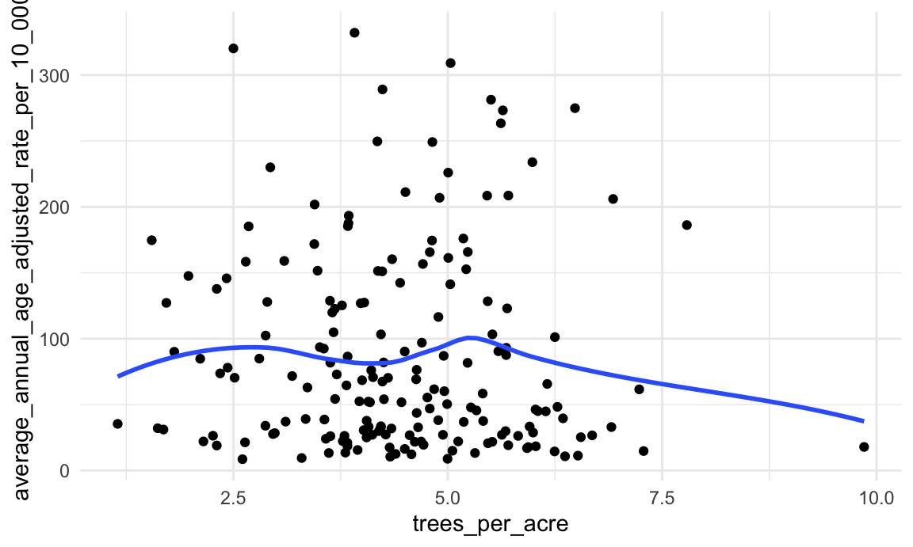
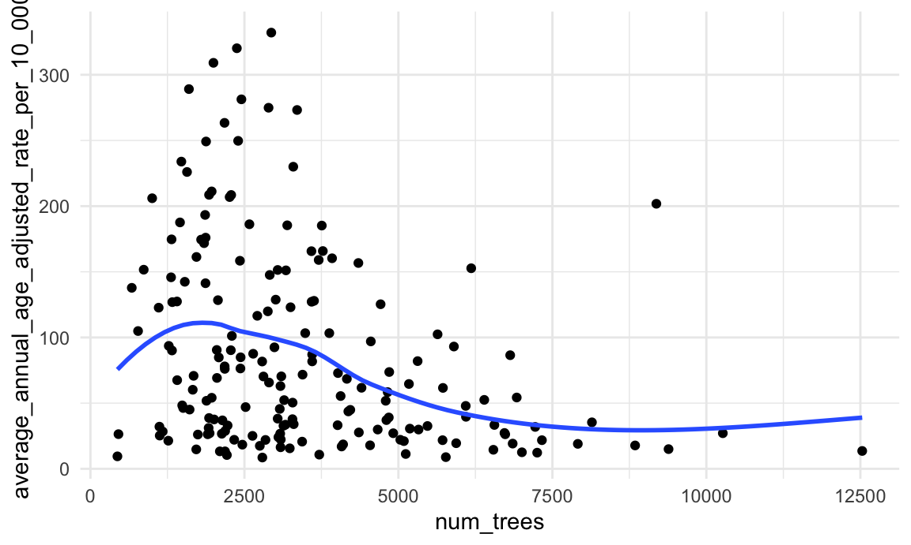
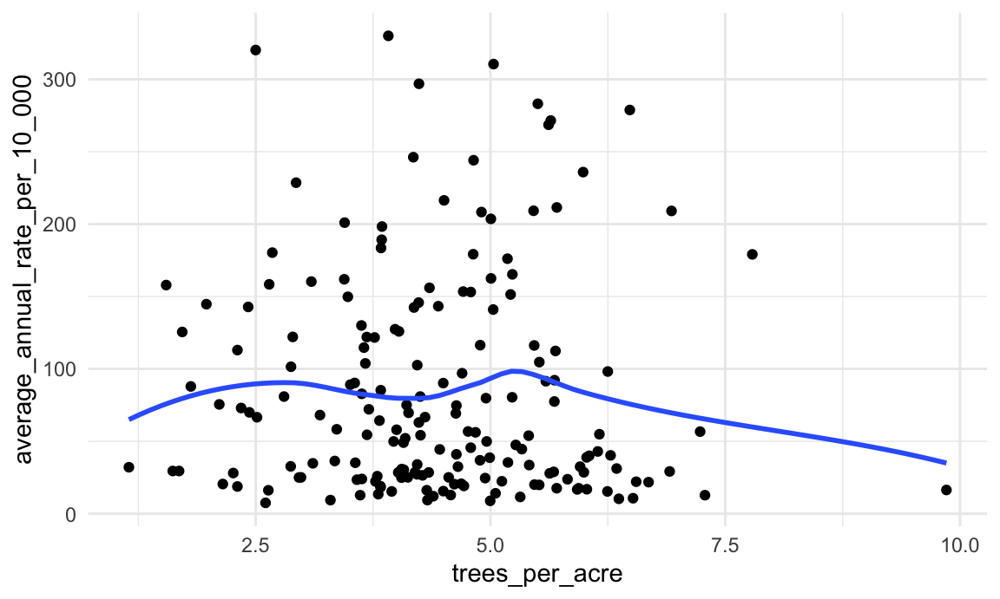
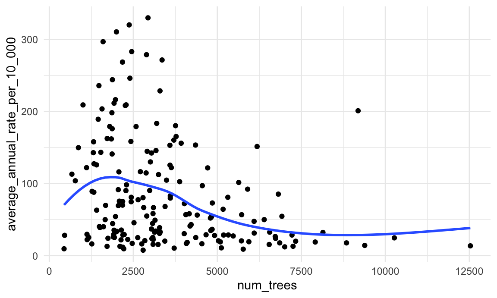
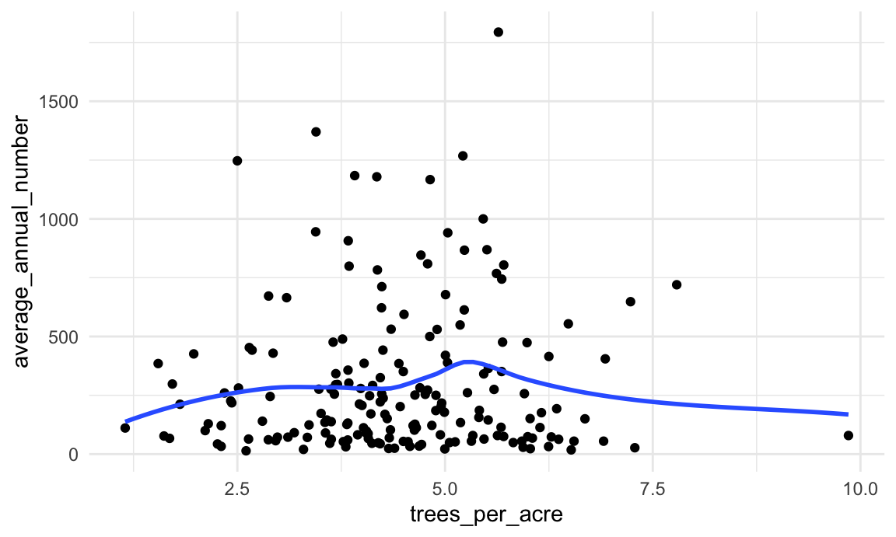
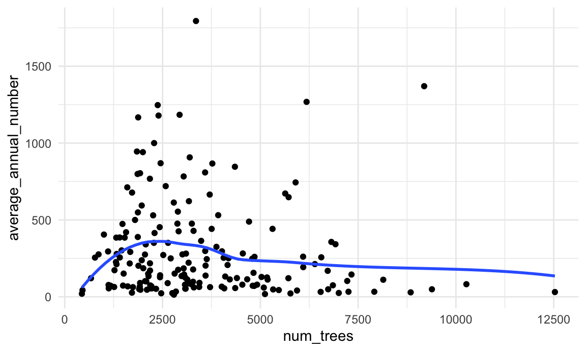
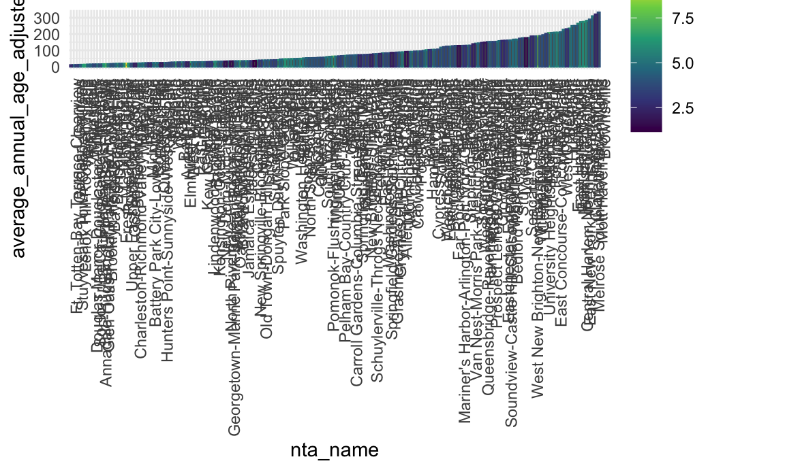
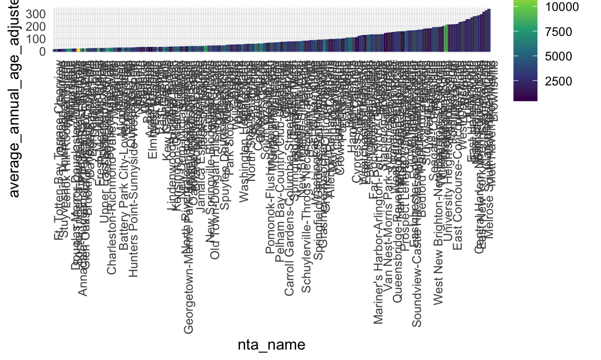

library(tidyverse)
library(readr)
library(readxl)knitr::opts_chunk$set(
fig.width = 6,
fig.asp = .6,
out.width = "90%"
)
theme_set(theme_minimal() + theme(legend.position = "right"))
options(
ggplot2.continuous.colour = "viridis",
ggplot2.continuous.fill = "viridis"
)
scale_colour_discrete = scale_colour_viridis_d
scale_fill_discrete = scale_fill_viridis_dEach line is an individual tree
tree_2015_cleaned <-
read_csv("large_tree_data/2015_tree_raw.csv", na = c("", "NA", "Unknown")) |>
janitor::clean_names() |>
select(-created_at, -steward, -user_type, -st_senate, -st_assem, -state) focusing just on 2010; uses 2010 NTAs
acres_raw <-
read_excel("small_data/t_pl_p5_nta.xlsx",
range = "A9:J203",
col_names = c("borough", "county_code", "nta", "nta_name",
"total_pop_2000", "total_pop_2010", "pop_change_num",
"pop_change_per", "total_acres", "persons_per_acre")
) |>
janitor::clean_names()
acres_sub <- acres_raw |>
select(nta_name, total_acres)looking at only Alive trees; 6 NTAs from our tree census are missing acreage info so we removed these NTA from the analysis
trees_per_nta <- tree_2015_cleaned |>
select(nta_name, nta, status) |>
filter(status == "Alive") |>
count(nta_name) |>
rename(num_trees = n)
trees_and_acres <- left_join(trees_per_nta, acres_sub, by = "nta_name")
num_missing_nta <- sum(is.na(trees_and_acres$total_acres))
trees_per_acre_df <- trees_and_acres |>
filter(!is.na(total_acres)) |>
mutate(trees_per_acre = num_trees/total_acres) |>
arrange(desc(trees_per_acre))asthma_ed_adults_raw =
read_csv("small_data/NYC EH Data Portal_Asthma emergency department visits adults.csv") |>
janitor::clean_names()## Rows: 388 Columns: 8
## ── Column specification ────────────────────────────────────────────────────────
## Delimiter: ","
## chr (3): Time, GeoType, Geography
## dbl (4): GeoID, GeoRank, Average annual age-adjusted rate per 10,000, Averag...
## num (1): Average annual number
##
## ℹ Use `spec()` to retrieve the full column specification for this data.
## ℹ Specify the column types or set `show_col_types = FALSE` to quiet this message.asthma_ed_adults_clean = asthma_ed_adults_raw |>
rename(nta_name = geography) |>
filter(geo_type == "NTA2010" & time == "2017-2019") |>
select(nta_name, average_annual_age_adjusted_rate_per_10_000, average_annual_rate_per_10_000, average_annual_number)checked and no NAs are present
trees_and_asthma_ed_adult <- left_join(trees_per_acre_df, asthma_ed_adults_clean, by = "nta_name")
miss <- sum(is.na(trees_and_asthma_ed_adult))when looking at histograms of x and y values most are skewed; can’t do a test of significance no to weak linear association
trees_and_asthma_ed_adult |>
select(nta_name, num_trees, total_acres, trees_per_acre, average_annual_age_adjusted_rate_per_10_000) |>
arrange(desc(trees_per_acre)) |>
filter(min_rank(desc(trees_per_acre)) < 11) |>
knitr::kable(digits = 2, caption = "Top 10 neighborhoods with most trees per acre and their asthma ED adult rate")| nta_name | num_trees | total_acres | trees_per_acre | average_annual_age_adjusted_rate_per_10_000 |
|---|---|---|---|---|
| Upper East Side-Carnegie Hill | 4540 | 460.66 | 9.86 | 17.9 |
| Central Harlem South | 2581 | 331.39 | 7.79 | 186.2 |
| Brooklyn Heights-Cobble Hill | 1718 | 235.86 | 7.28 | 14.8 |
| Upper West Side | 5723 | 791.29 | 7.23 | 61.6 |
| Fordham South | 1002 | 144.63 | 6.93 | 206.0 |
| Windsor Terrace | 2227 | 322.38 | 6.91 | 33.0 |
| Yorkville | 2133 | 319.14 | 6.68 | 26.7 |
| Gramercy | 1125 | 171.71 | 6.55 | 25.3 |
| Auburndale | 5119 | 785.35 | 6.52 | 11.3 |
| East New York (Pennsylvania Ave) | 2892 | 446.05 | 6.48 | 274.9 |
trees_and_asthma_ed_adult |>
select(nta_name, num_trees, total_acres, trees_per_acre, average_annual_age_adjusted_rate_per_10_000) |>
arrange((trees_per_acre)) |>
filter(min_rank(trees_per_acre) < 11) |>
knitr::kable(digits = 2, caption = "Top 10 neighborhoods with least trees per acre and their asthma ED adult rate")| nta_name | num_trees | total_acres | trees_per_acre | average_annual_age_adjusted_rate_per_10_000 |
|---|---|---|---|---|
| New Springville-Bloomfield-Travis | 8142 | 7083.27 | 1.15 | 35.4 |
| Seagate-Coney Island | 1317 | 851.49 | 1.55 | 174.7 |
| Midtown-Midtown South | 1120 | 692.81 | 1.62 | 32.1 |
| North Riverdale-Fieldston-Riverdale | 1919 | 1139.68 | 1.68 | 31.1 |
| Mariner’s Harbor-Arlington-Port Ivory-Graniteville | 3591 | 2090.79 | 1.72 | 127.2 |
| Gravesend | 1324 | 731.83 | 1.81 | 90.1 |
| Hammels-Arverne-Edgemere | 2911 | 1474.08 | 1.97 | 147.6 |
| Grasmere-Arrochar-Ft. Wadsworth | 2084 | 986.63 | 2.11 | 84.8 |
| Hunters Point-Sunnyside-West Maspeth | 5031 | 2340.44 | 2.15 | 22.1 |
| West Brighton | 455 | 201.25 | 2.26 | 26.4 |
trees_and_asthma_ed_adult |>
ggplot(aes(x = trees_per_acre, y = average_annual_age_adjusted_rate_per_10_000)) +
geom_point() +
geom_smooth(se = FALSE)## `geom_smooth()` using method = 'loess' and formula = 'y ~ x'
cor(pull(trees_and_asthma_ed_adult, trees_per_acre), pull(trees_and_asthma_ed_adult, average_annual_age_adjusted_rate_per_10_000))## [1] -0.03778053trees_and_asthma_ed_adult |>
ggplot(aes(x = num_trees, y = average_annual_age_adjusted_rate_per_10_000)) +
geom_point() +
geom_smooth(se = FALSE)## `geom_smooth()` using method = 'loess' and formula = 'y ~ x'
cor(pull(trees_and_asthma_ed_adult, num_trees), pull(trees_and_asthma_ed_adult, average_annual_age_adjusted_rate_per_10_000))## [1] -0.3064219trees_and_asthma_ed_adult |>
ggplot(aes(x = trees_per_acre, y = average_annual_rate_per_10_000)) +
geom_point() +
geom_smooth(se = FALSE)## `geom_smooth()` using method = 'loess' and formula = 'y ~ x'
cor(pull(trees_and_asthma_ed_adult, trees_per_acre), pull(trees_and_asthma_ed_adult, average_annual_rate_per_10_000))## [1] -0.03346463trees_and_asthma_ed_adult |>
ggplot(aes(x = num_trees, y = average_annual_rate_per_10_000)) +
geom_point() +
geom_smooth(se = FALSE)## `geom_smooth()` using method = 'loess' and formula = 'y ~ x'
cor(pull(trees_and_asthma_ed_adult, num_trees), pull(trees_and_asthma_ed_adult, average_annual_rate_per_10_000))## [1] -0.2990496trees_and_asthma_ed_adult |>
ggplot(aes(x = trees_per_acre, y = average_annual_number)) +
geom_point() +
geom_smooth(se = FALSE)## `geom_smooth()` using method = 'loess' and formula = 'y ~ x'
cor(pull(trees_and_asthma_ed_adult, trees_per_acre), pull(trees_and_asthma_ed_adult, average_annual_number))## [1] 0.05052852trees_and_asthma_ed_adult |>
ggplot(aes(x = num_trees, y = average_annual_number)) +
geom_point() +
geom_smooth(se = FALSE)## `geom_smooth()` using method = 'loess' and formula = 'y ~ x'
cor(pull(trees_and_asthma_ed_adult, num_trees), pull(trees_and_asthma_ed_adult, average_annual_number))## [1] -0.09345294trees_and_asthma_ed_adult |>
mutate(nta_name = forcats::fct_reorder(nta_name, average_annual_age_adjusted_rate_per_10_000)) |>
ggplot(aes(x = nta_name, y = average_annual_age_adjusted_rate_per_10_000, color = trees_per_acre)) +
geom_col() +
theme(axis.text.x = element_text(angle=90, vjust=1, hjust=1))
trees_and_asthma_ed_adult |>
mutate(nta_name = forcats::fct_reorder(nta_name, average_annual_age_adjusted_rate_per_10_000)) |>
ggplot(aes(x = nta_name, y = average_annual_age_adjusted_rate_per_10_000, color = num_trees)) +
geom_col() +
theme(axis.text.x = element_text(angle=90, vjust=1, hjust=1))
asthma_ed_child_raw <-
read_csv("small_data/NYC EH Data Portal_Asthma emergency department visits_4 and under.csv") |>
janitor::clean_names()## Rows: 194 Columns: 7
## ── Column specification ────────────────────────────────────────────────────────
## Delimiter: ","
## chr (5): Time, GeoType, Geography, Average annual rate per 10,000, Number
## dbl (2): GeoID, GeoRank
##
## ℹ Use `spec()` to retrieve the full column specification for this data.
## ℹ Specify the column types or set `show_col_types = FALSE` to quiet this message.asthma_ed_child_clean <- asthma_ed_child_raw |>
rename(nta_name = geography) |>
filter(geo_type == "NTA2010" & time == "2014-2016") |>
select(nta_name, average_annual_rate_per_10_000, number)checked and no NAs are present
trees_and_asthma_ed_child <- left_join(trees_per_acre_df, asthma_ed_child_clean, by = "nta_name")
sum(is.na(trees_and_asthma_ed_child))## [1] 0trees_and_asthma_ed_child |>
select(nta_name, num_trees, total_acres, trees_per_acre, average_annual_rate_per_10_000) |>
arrange(desc(trees_per_acre)) |>
filter(min_rank(desc(trees_per_acre)) < 11) |>
knitr::kable(digits = 2, caption = "Top 10 neighborhoods with most trees per acre and their asthma ED child rate")| nta_name | num_trees | total_acres | trees_per_acre | average_annual_rate_per_10_000 |
|---|---|---|---|---|
| Upper East Side-Carnegie Hill | 4540 | 460.66 | 9.86 | 34.4 |
| Central Harlem South | 2581 | 331.39 | 7.79 | 433.0 |
| Brooklyn Heights-Cobble Hill | 1718 | 235.86 | 7.28 | 56.6 |
| Upper West Side | 5723 | 791.29 | 7.23 | 144.6 |
| Fordham South | 1002 | 144.63 | 6.93 | 564.5 |
| Windsor Terrace | 2227 | 322.38 | 6.91 | 47.2 |
| Yorkville | 2133 | 319.14 | 6.68 | 80.9 |
| Gramercy | 1125 | 171.71 | 6.55 | 42.9* |
| Auburndale | 5119 | 785.35 | 6.52 | 56.1 |
| East New York (Pennsylvania Ave) | 2892 | 446.05 | 6.48 | 378.0 |
trees_and_asthma_ed_child |>
select(nta_name, num_trees, total_acres, trees_per_acre, average_annual_rate_per_10_000) |>
arrange((trees_per_acre)) |>
filter(min_rank(trees_per_acre) < 11) |>
knitr::kable(digits = 2, caption = "Top 10 neighborhoods with least trees per acre and their asthma ED child rate")| nta_name | num_trees | total_acres | trees_per_acre | average_annual_rate_per_10_000 |
|---|---|---|---|---|
| New Springville-Bloomfield-Travis | 8142 | 7083.27 | 1.15 | 70.9 |
| Seagate-Coney Island | 1317 | 851.49 | 1.55 | 366.9 |
| Midtown-Midtown South | 1120 | 692.81 | 1.62 | 76.1 |
| North Riverdale-Fieldston-Riverdale | 1919 | 1139.68 | 1.68 | 64.7 |
| Mariner’s Harbor-Arlington-Port Ivory-Graniteville | 3591 | 2090.79 | 1.72 | 264.9 |
| Gravesend | 1324 | 731.83 | 1.81 | 129.3 |
| Hammels-Arverne-Edgemere | 2911 | 1474.08 | 1.97 | 251.7 |
| Grasmere-Arrochar-Ft. Wadsworth | 2084 | 986.63 | 2.11 | 97.1 |
| Hunters Point-Sunnyside-West Maspeth | 5031 | 2340.44 | 2.15 | 64.8 |
| West Brighton | 455 | 201.25 | 2.26 | 68.2* |